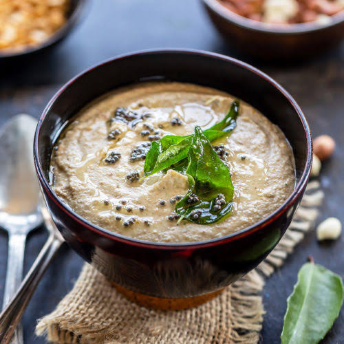

1 teaspoon tamarind or ½ tomato (for slight tanginess)
For Tempering (optional but enhances taste):
1 teaspoon oil
½ teaspoon mustard seeds
5-6 curry leaves
1 dried red chili (broken)

Instructions:
Roast Peanuts & Spices:
In a pan, dry roast peanuts until golden brown. Add dried red chilies, cumin, and garlic (if using), and roast for another 1-2 minutes. Let it cool.
Blend the Mixture:
Transfer the roasted ingredients to a blender. Add salt, tamarind (or tomato), and water. Blend into a smooth or slightly coarse chutney. Adjust water for consistency.
Prepare the Tempering:
Heat oil in a small pan, add mustard seeds. Once they splutter, add curry leaves and dried red chili. Sauté for a few seconds.
Combine Everything
Pour the tempering over the chutney and mix well.
Serve & Enjoy
our peanut chutney is ready! Serve it with dosa, idli, or rice.
కావలసినవిః
½ కప్పు వేరుశెనగ
2-3 ఎండిన ఎర్ర మిరపకాయలు (మసాలా స్థాయిని సర్దుబాటు చేయండి)
2 వెల్లుల్లి రెబ్బలు (ఐచ్ఛికం)
½ టీస్పూన్ జీలకర్ర
½ టీస్పూన్ జీలకర్ర గింజలు
½ టీస్పూన్ ఉప్పు (లేదా రుచికి)
¼ కప్పు నీరు (అవసరమైనట్లు సర్దుబాటు చేయండి)
1 టేబుల్ స్పూన్ నూనె
1 టీస్పూన్ చింతపండు లేదా ½ టొమాటో (కొద్దిగా మెత్తగా ఉండటానికి)
టెంపరింగ్ కోసం (ఐచ్ఛికం కానీ రుచిని పెంచుతుంది)
1 టీస్పూన్ నూనె
½ టీస్పూన్ ఆవాలు
5-6 కరివేపాకు
1 ఎండిన ఎర్ర మిరపకాయ (విరిగిన)
రోస్ట్ వేరుశెనగ & మసాలా దినుసులు:
ఒక పాన్లో, బంగారు గోధుమ రంగు వచ్చేవరకు వేరుశెనగలను పొడిగా కాల్చండి. ఎండిన ఎర్ర మిరపకాయలు, జీలకర్ర మరియు వెల్లుల్లి (ఉపయోగిస్తే) వేసి మరో 1-2 నిమిషాలు కాల్చండి.
మిశ్రమాన్ని బ్లెండ్ చేయండి:
కాల్చిన పదార్థాలను బ్లెండర్కు బదిలీ చేయండి. ఉప్పు, చింతపండు (లేదా టమోటా) మరియు నీరు జోడించండి. మృదువైన లేదా కొద్దిగా ముతక చట్నీలో కలపండి. స్థిరత్వం కోసం నీటిని సర్దుబాటు చేయండి.
టెంపరింగ్ సిద్ధం
ఒక చిన్న పాన్ లో నూనె వేడి, ఆవాలు జోడించండి. అవి చిమ్మిన తర్వాత, కరివేపాకు మరియు ఎండు మిరపకాయలను జోడించండి. కొన్ని సెకన్ల పాటు వేగించండి
.ప్రతిదీ కలపండి
చట్నీపై టెంపరింగ్ పోసి బాగా కలపండి
.సర్వ్ & ఆనందించండి
మీ వేరుశెనగ చట్నీ సిద్ధంగా ఉంది! దీన్ని దోసె, ఇడ్లీ లేదా అన్నంతో సర్వ్ చేయండి